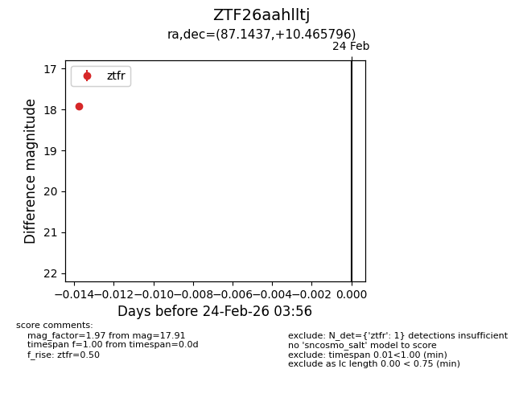
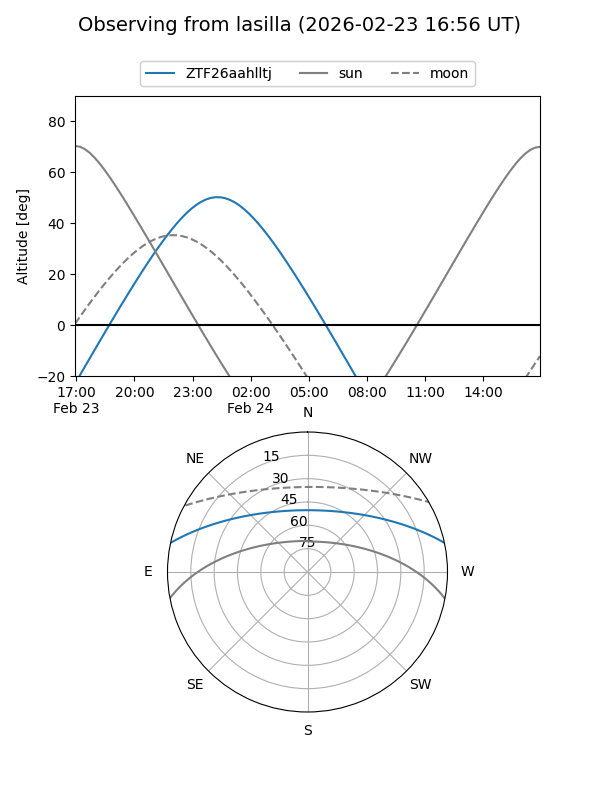
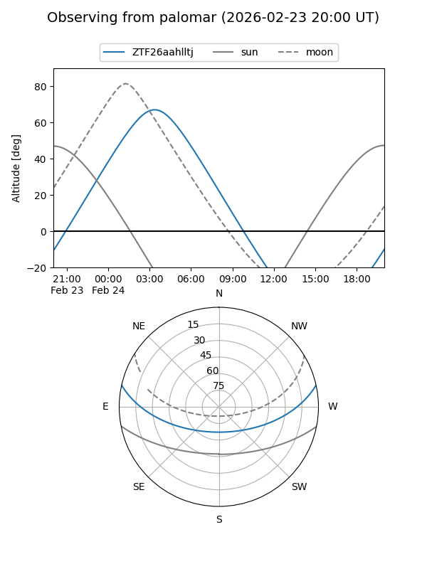

ZTF26aahlltj
Target ZTF26aahlltj at 2026-02-24 09:08
Aliases and brokers:
FINK: link
Lasair: link
ALeRCE: link
alt names
ZTF26aahlltj (ztf,fink_ztf)
Coordinates:
equatorial (ra, dec) = 87.1437,+10.46580
equatorial (HMS+DMS) = 05:48:34.50,+10:27:56.86
galactic (l, b) = (196.2805,-8.87199)
Flags:
Photometry:
last ztfr=17.91
1 ztfr detections
Lightcurve

Visibility


Additional plots